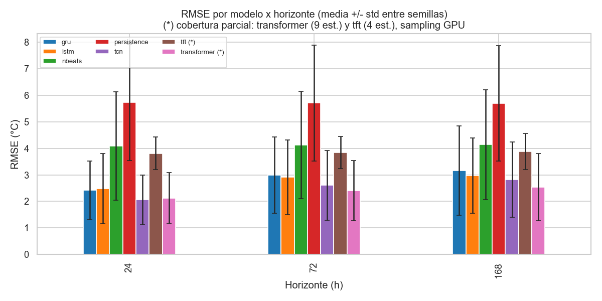
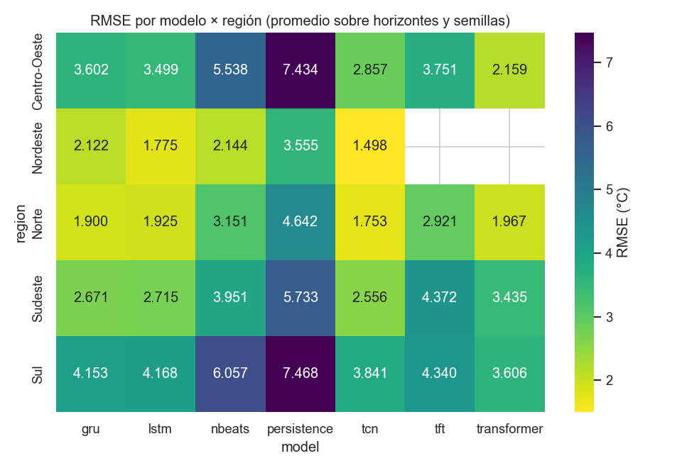
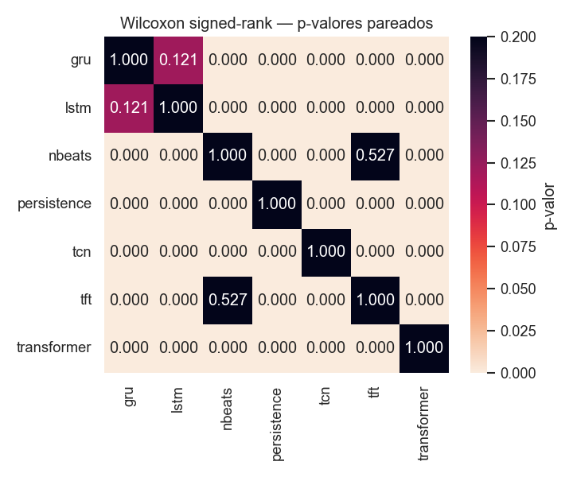
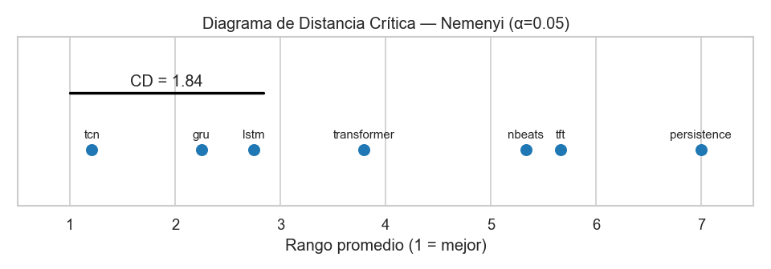
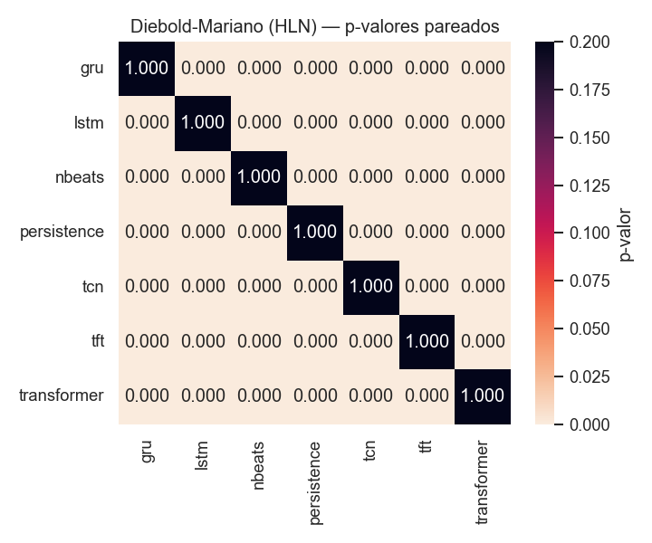
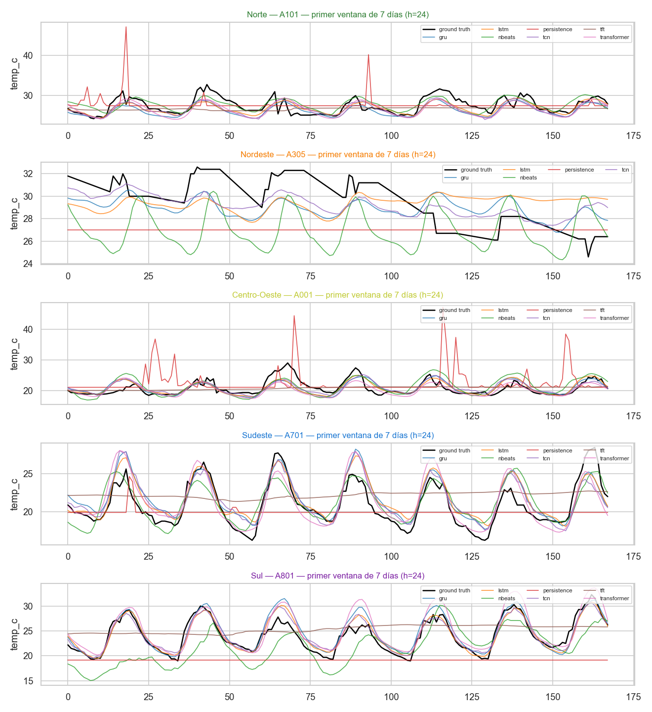
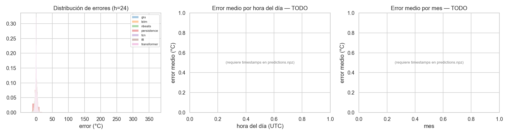

Benchmark Final: Comparación Estadística de Modelos de Forecasting#
Muestreo Provisional
from __future__ import annotations
import json
import os
import sys
from itertools import combinations
from pathlib import Path
import numpy as np
import pandas as pd
import yaml
# Resolución robusta de la raíz del repo (notebook puede estar en /notebooks)
REPO_ROOT = Path.cwd().resolve()
while not (REPO_ROOT / "config" / "config.yaml").exists() and REPO_ROOT != REPO_ROOT.parent:
REPO_ROOT = REPO_ROOT.parent
sys.path.insert(0, str(REPO_ROOT))
os.chdir(REPO_ROOT)
CONFIG = yaml.safe_load((REPO_ROOT / "config" / "config.yaml").read_text(encoding="utf-8"))
SAMPLING = CONFIG.get("sampling", {}) or {}
SAMPLING_ON = bool(SAMPLING.get("enabled", False))
if SAMPLING_ON:
print("⚠️ MUESTREO PROVISIONAL ACTIVO — los resultados NO son finales.")
print(f" n_stations_per_region: {SAMPLING.get('n_stations_per_region')}")
print(f" train_years : {SAMPLING.get('train_years')}")
print(f" max_epochs_override : {SAMPLING.get('max_epochs_override')}")
print(f" n_seeds_override : {SAMPLING.get('n_seeds_override')}")
else:
print("✅ Configuración completa (sin muestreo). Resultados oficiales.")
✅ Configuración completa (sin muestreo). Resultados oficiales.
Configuración global, paths e imports#
import warnings
warnings.filterwarnings("ignore", category=FutureWarning)
import matplotlib.pyplot as plt
import seaborn as sns
from IPython.display import Image, display
from src.utils.regions import (
all_regions, region_color, region_color_map,
region_of, stations_by_region,
)
from src.benchmark.stats_tests import (
diebold_mariano,
friedman_with_posthoc,
wilcoxon_pairs,
ljung_box,
bds_test,
bootstrap_ci,
nemenyi_critical_difference,
average_ranks,
shapiro_per_model,
)
EXP_DIR = REPO_ROOT / CONFIG["paths"]["experiments"]
FIG_DIR = REPO_ROOT / CONFIG["paths"]["figures"] / "benchmark_final"
TAB_DIR = REPO_ROOT / CONFIG["paths"]["tables"] / "benchmark_final"
STATS_DIR = REPO_ROOT / CONFIG["paths"]["stats"]
for d in (FIG_DIR, TAB_DIR, STATS_DIR):
d.mkdir(parents=True, exist_ok=True)
DEFAULT_MODELS = ["persistence", "lstm", "gru", "tcn", "nbeats", "transformer", "tft"]
DEFAULT_HORIZONS = [24, 72, 168]
ALPHA = 0.05 # nivel de significancia declarado
N_BOOT = 1000 # bootstrap percentil
RNG_SEED = 42
sns.set_context("notebook")
sns.set_style("whitegrid")
def show_saved_figure(path: Path | None) -> None:
if path is None:
return
display(Image(filename=str(path)))
print(path)
1. Comparación Tabular#
1.1 Carga de resultados desde experiments/#
def _seed_dirs(model: str) -> list[Path]:
base = EXP_DIR / model
if not base.exists():
return []
return sorted(p for st in base.iterdir() if st.is_dir()
for p in st.iterdir()
if p.is_dir() and p.name.startswith("seed="))
def load_predictions_long() -> pd.DataFrame:
"""Devuelve un DataFrame largo: una fila por (modelo, station, seed, horizonte).
Columnas: model, station, region, seed, horizon, y_true, y_pred (vectores 1D).
Si no hay runs todavía, devuelve un DataFrame vacío y un mensaje claro.
"""
rows = []
target_h = CONFIG["task"]["horizon"]
for model in DEFAULT_MODELS:
for sd in _seed_dirs(model):
station = sd.parent.name
seed = int(sd.name.split("=", 1)[1])
try:
npz = np.load(sd / "predictions.npz", allow_pickle=True)
except FileNotFoundError:
continue
y_true = npz["y_true"] # (N, H, T)
y_pred = npz["y_pred"]
if y_true.ndim == 2:
y_true = y_true[:, :, None]
y_pred = y_pred[:, :, None]
try:
region = region_of(station)
except KeyError:
region = "desconocida"
for h_step in DEFAULT_HORIZONS:
# h_step es paso de horizonte (1..target_h). Si target_h<h_step,
# tomamos el último paso disponible.
idx = min(h_step, y_true.shape[1]) - 1
rows.append({
"model": model, "station": station, "region": region,
"seed": seed, "horizon": h_step,
"y_true": y_true[:, idx, 0].astype(float),
"y_pred": y_pred[:, idx, 0].astype(float),
})
return pd.DataFrame(rows)
try:
PRED_LONG = load_predictions_long()
except Exception as exc:
print(f"[load_predictions_long] error: {exc}")
PRED_LONG = pd.DataFrame()
if PRED_LONG.empty:
print("Aún no hay resultados. Corre los entrenamientos primero:")
print(" make train # o")
print(" python -m src.training.runner --model lstm --seeds 5 (etc.)")
else:
print(f"Predicciones cargadas: {len(PRED_LONG)} filas "
f"(modelo×station×seed×horizonte). Modelos: "
f"{sorted(PRED_LONG['model'].unique())}.")
Predicciones cargadas: 1155 filas (modelo×station×seed×horizonte). Modelos: ['gru', 'lstm', 'nbeats', 'persistence', 'tcn', 'tft', 'transformer'].
Cobertura de experimentos por modelo#
# Estaciones comunes para comparacion justa entre modelos con distinta cobertura
COMMON_STATIONS_ALL7 = ["A001", "A101", "A701", "A801"]
COMMON_STATIONS_6 = ["A001", "A101", "A102", "A104", "A135",
"A201", "A210", "A701", "A801"]
_COV_META = {
"persistence": ("completo", 36, "36 est. x 2 seeds -- entrenamiento completo"),
"lstm": ("completo", 36, "36 est. x 2 seeds -- entrenamiento completo"),
"gru": ("completo", 36, "36 est. x 2 seeds -- entrenamiento completo"),
"tcn": ("completo", 36, "36 est. x 2 seeds -- entrenamiento completo"),
"nbeats": ("completo", 36, "36 est. x 2 seeds -- entrenamiento completo"),
"transformer": ("parcial", 9, "9 est., sampling GPU (10 epochs) -- preliminar"),
"tft": ("parcial", 4, "4 est., sampling GPU (10 epochs) -- preliminar"),
}
if not PRED_LONG.empty:
_n_st = PRED_LONG.groupby("model")["station"].nunique()
_n_run = PRED_LONG.groupby("model").apply(
lambda g: g[["station", "seed"]].drop_duplicates().shape[0])
_cov_rows = []
for _m in DEFAULT_MODELS:
_tipo, _, _nota = _COV_META.get(_m, ("?", 0, ""))
_cov_rows.append({"model": _m,
"n_stations": int(_n_st.get(_m, 0)),
"n_runs": int(_n_run.get(_m, 0)),
"tipo": _tipo,
"nota": _nota})
COV_TABLE = pd.DataFrame(_cov_rows)
print("Cobertura de experimentos por modelo:")
print(COV_TABLE.to_string(index=False))
print(f"\nEstaciones comunes (7 modelos): {COMMON_STATIONS_ALL7}")
print(f"Estaciones comunes (6 mod, sin TFT): {COMMON_STATIONS_6}")
else:
COV_TABLE = pd.DataFrame()
Cobertura de experimentos por modelo:
model n_stations n_runs tipo nota
persistence 36 72 completo 36 est. x 2 seeds -- entrenamiento completo
lstm 36 72 completo 36 est. x 2 seeds -- entrenamiento completo
gru 36 72 completo 36 est. x 2 seeds -- entrenamiento completo
tcn 36 72 completo 36 est. x 2 seeds -- entrenamiento completo
nbeats 36 72 completo 36 est. x 2 seeds -- entrenamiento completo
transformer 9 17 parcial 9 est., sampling GPU (10 epochs) -- preliminar
tft 4 8 parcial 4 est., sampling GPU (10 epochs) -- preliminar
Estaciones comunes (7 modelos): ['A001', 'A101', 'A701', 'A801']
Estaciones comunes (6 mod, sin TFT): ['A001', 'A101', 'A102', 'A104', 'A135', 'A201', 'A210', 'A701', 'A801']
1.2 Métricas y bootstrap#
Para cada par (modelo, station, seed, horizonte) calculamos RMSE, MAE, R² y
sMAPE sobre el vector de errores e = y_pred - y_true, y construimos el IC
95% por bootstrap percentil (1000 resamples). El bootstrap se realiza
sobre los errores al cuadrado para RMSE y sobre los errores absolutos
para MAE — así el intervalo refleja la dispersión de la métrica, no de los
errores brutos.
def _rmse(e): return float(np.sqrt(np.mean(e ** 2)))
def _mae(e): return float(np.mean(np.abs(e)))
def _smape(yt, yp):
denom = (np.abs(yt) + np.abs(yp))
denom[denom == 0] = 1.0
return float(100 * np.mean(2 * np.abs(yp - yt) / denom))
def _r2(yt, yp):
ss_res = np.sum((yt - yp) ** 2)
ss_tot = np.sum((yt - np.mean(yt)) ** 2)
return float(1 - ss_res / ss_tot) if ss_tot > 0 else float("nan")
def metrics_per_run(df: pd.DataFrame) -> pd.DataFrame:
"""Una fila por (modelo, station, seed, horizonte) con métricas + IC bootstrap."""
out = []
if df.empty:
return pd.DataFrame()
for _, r in df.iterrows():
yt, yp = r["y_true"], r["y_pred"]
e = yp - yt
ci_rmse = bootstrap_ci(e, n_boot=N_BOOT, alpha=ALPHA,
stat_fn=lambda x: float(np.sqrt(np.mean(x ** 2))),
seed=RNG_SEED)
out.append({
"model": r["model"], "station": r["station"], "region": r["region"],
"seed": r["seed"], "horizon": r["horizon"],
"rmse": _rmse(e), "mae": _mae(e),
"r2": _r2(yt, yp), "smape": _smape(yt, yp),
"rmse_ci_lo": ci_rmse["lo"], "rmse_ci_hi": ci_rmse["hi"],
})
return pd.DataFrame(out)
PER_RUN = metrics_per_run(PRED_LONG) if not PRED_LONG.empty else pd.DataFrame()
PER_RUN.head() if not PER_RUN.empty else "[Aún sin resultados]"
| model | station | region | seed | horizon | rmse | mae | r2 | smape | rmse_ci_lo | rmse_ci_hi | |
|---|---|---|---|---|---|---|---|---|---|---|---|
| 0 | persistence | A001 | Centro-Oeste | 42 | 24 | 5.018974 | 3.485432 | -0.608893 | 15.690542 | 4.628543 | 5.485484 |
| 1 | persistence | A001 | Centro-Oeste | 42 | 72 | 5.034158 | 3.494718 | -0.604943 | 15.722053 | 4.637145 | 5.476650 |
| 2 | persistence | A001 | Centro-Oeste | 42 | 168 | 4.978442 | 3.485303 | -0.563884 | 15.680705 | 4.624896 | 5.398048 |
| 3 | persistence | A001 | Centro-Oeste | 43 | 24 | 5.018974 | 3.485432 | -0.608893 | 15.690542 | 4.628543 | 5.485484 |
| 4 | persistence | A001 | Centro-Oeste | 43 | 72 | 5.034158 | 3.494718 | -0.604943 | 15.722053 | 4.637145 | 5.476650 |
1.3 Tabla 1 — por (modelo × horizonte)#
def _agg_mean_std(df: pd.DataFrame, by: list[str]) -> pd.DataFrame:
if df.empty:
return pd.DataFrame()
metrics = ["rmse", "mae", "r2", "smape"]
g = df.groupby(by)[metrics]
out = g.agg(["mean", "std"]).round(4)
out.columns = [f"{m}_{s}" for m, s in out.columns]
# IC global: media y desviación de los IC por run -> agregamos por bootstrap
# del propio RMSE entre runs (más informativo que promediar IC individuales)
def _rmse_mean_ci(x: pd.Series) -> pd.Series:
ci = bootstrap_ci(x.to_numpy(), n_boot=N_BOOT, alpha=ALPHA,
stat_fn=np.mean, seed=RNG_SEED)
return pd.Series({"rmse_ci_lo": ci["lo"], "rmse_ci_hi": ci["hi"]})
rmse_ci = df.groupby(by)["rmse"].apply(_rmse_mean_ci).unstack().round(4)
out = out.join(rmse_ci)
return out.reset_index()
TBL_MODEL_HOR = _agg_mean_std(PER_RUN, by=["model", "horizon"]) if not PER_RUN.empty else pd.DataFrame()
if not TBL_MODEL_HOR.empty:
TBL_MODEL_HOR.to_csv(TAB_DIR / "tabla_modelo_x_horizonte.csv", index=False)
TBL_MODEL_HOR
| model | horizon | rmse_mean | rmse_std | mae_mean | mae_std | r2_mean | r2_std | smape_mean | smape_std | rmse_ci_lo | rmse_ci_hi | |
|---|---|---|---|---|---|---|---|---|---|---|---|---|
| 0 | gru | 24 | 2.4189 | 1.1125 | 1.9274 | 1.0776 | 0.1608 | 1.8997 | 8.8972 | 5.3080 | 2.1847 | 2.6844 |
| 1 | gru | 72 | 2.9930 | 1.4374 | 2.4120 | 1.3655 | -0.5572 | 3.6836 | 11.1985 | 6.9583 | 2.6778 | 3.3359 |
| 2 | gru | 168 | 3.1613 | 1.6880 | 2.5778 | 1.6287 | -1.5020 | 6.8388 | 11.9511 | 8.2337 | 2.8028 | 3.5563 |
| 3 | lstm | 24 | 2.4853 | 1.3224 | 1.9704 | 1.2786 | 0.0279 | 2.3625 | 9.1058 | 6.0559 | 2.2165 | 2.7892 |
| 4 | lstm | 72 | 2.9114 | 1.4149 | 2.3235 | 1.3373 | -0.2687 | 2.9730 | 10.8631 | 6.9791 | 2.6102 | 3.2355 |
| 5 | lstm | 168 | 2.9790 | 1.4222 | 2.4042 | 1.3481 | -0.6418 | 4.1006 | 11.2210 | 7.1125 | 2.6718 | 3.3083 |
| 6 | nbeats | 24 | 4.0907 | 2.0378 | 3.3605 | 1.7812 | -0.8221 | 3.3608 | 15.5846 | 9.6639 | 3.6016 | 4.5591 |
| 7 | nbeats | 72 | 4.1232 | 2.0223 | 3.3884 | 1.7707 | -0.9002 | 3.6726 | 15.7198 | 9.6709 | 3.6395 | 4.5949 |
| 8 | nbeats | 168 | 4.1411 | 2.0698 | 3.4074 | 1.7936 | -1.1212 | 4.9254 | 15.8712 | 10.0172 | 3.6543 | 4.6301 |
| 9 | persistence | 24 | 5.7387 | 2.1936 | 4.0885 | 1.7927 | -2.5250 | 6.4684 | 17.8723 | 8.7019 | 5.2135 | 6.2352 |
| 10 | persistence | 72 | 5.7132 | 2.1855 | 4.0813 | 1.7871 | -2.5473 | 6.5953 | 17.8426 | 8.6681 | 5.1842 | 6.2077 |
| 11 | persistence | 168 | 5.7031 | 2.1763 | 4.0841 | 1.7847 | -2.8326 | 7.9667 | 17.8530 | 8.6573 | 5.1790 | 6.1967 |
| 12 | tcn | 24 | 2.0608 | 0.9386 | 1.5798 | 0.7607 | 0.4196 | 1.1947 | 7.4610 | 4.4269 | 1.8489 | 2.2845 |
| 13 | tcn | 72 | 2.6060 | 1.3199 | 2.0487 | 1.0916 | -0.0599 | 2.3434 | 9.6903 | 6.2649 | 2.3088 | 2.9195 |
| 14 | tcn | 168 | 2.8161 | 1.4162 | 2.2413 | 1.1745 | -0.6432 | 4.4646 | 10.5338 | 6.7164 | 2.4985 | 3.1744 |
| 15 | tft | 24 | 3.8138 | 0.6128 | 3.1200 | 0.4673 | 0.1664 | 0.2305 | 14.7705 | 4.1288 | 3.3785 | 4.1757 |
| 16 | tft | 72 | 3.8413 | 0.6118 | 3.1359 | 0.4659 | 0.1594 | 0.2340 | 14.8312 | 4.1156 | 3.4097 | 4.1939 |
| 17 | tft | 168 | 3.8836 | 0.6776 | 3.1653 | 0.5095 | 0.1556 | 0.2190 | 14.9736 | 4.2599 | 3.4017 | 4.2791 |
| 18 | transformer | 24 | 2.1306 | 0.9638 | 1.6369 | 0.7911 | 0.5054 | 0.3442 | 7.0786 | 3.8604 | 1.6364 | 2.5527 |
| 19 | transformer | 72 | 2.3997 | 1.1373 | 1.8487 | 0.9199 | 0.4043 | 0.3715 | 8.0756 | 4.8074 | 1.8128 | 2.8958 |
| 20 | transformer | 168 | 2.5356 | 1.2647 | 1.9559 | 1.0204 | 0.3413 | 0.4339 | 8.6255 | 5.5202 | 1.8825 | 3.0957 |
1.4 Tabla 2 — agregada por modelo (promedio sobre horizontes)#
TBL_MODEL = _agg_mean_std(PER_RUN, by=["model"]) if not PER_RUN.empty else pd.DataFrame()
if not TBL_MODEL.empty:
TBL_MODEL = TBL_MODEL.sort_values("rmse_mean").reset_index(drop=True)
if not COV_TABLE.empty:
_cov_map = COV_TABLE.set_index("model")[["n_stations", "tipo"]].rename(
columns={"tipo": "coverage"})
TBL_MODEL = TBL_MODEL.merge(_cov_map, on="model", how="left")
TBL_MODEL.to_csv(TAB_DIR / "tabla_modelo_agg.csv", index=False)
print("Nota: transformer (9 est.) y tft (4 est.) usaron sampling GPU (10 epochs).")
print(" RMSE promediado sobre menos estaciones -- no comparable directamente.")
print(" Ver ranking comparativo en estaciones comunes mas abajo.")
TBL_MODEL
Nota: transformer (9 est.) y tft (4 est.) usaron sampling GPU (10 epochs).
RMSE promediado sobre menos estaciones -- no comparable directamente.
Ver ranking comparativo en estaciones comunes mas abajo.
| model | rmse_mean | rmse_std | mae_mean | mae_std | r2_mean | r2_std | smape_mean | smape_std | rmse_ci_lo | rmse_ci_hi | n_stations | coverage | |
|---|---|---|---|---|---|---|---|---|---|---|---|---|---|
| 0 | transformer | 2.3553 | 1.1189 | 1.8138 | 0.9067 | 0.4170 | 0.3824 | 7.9266 | 4.7259 | 2.0381 | 2.6601 | 9 | parcial |
| 1 | tcn | 2.4943 | 1.2768 | 1.9566 | 1.0572 | -0.0945 | 3.0077 | 9.2284 | 6.0015 | 2.3224 | 2.6645 | 36 | completo |
| 2 | lstm | 2.7919 | 1.3980 | 2.2327 | 1.3290 | -0.2942 | 3.2215 | 10.3966 | 6.7646 | 2.6117 | 2.9653 | 36 | completo |
| 3 | gru | 2.8578 | 1.4606 | 2.3057 | 1.3970 | -0.6328 | 4.6431 | 10.6823 | 7.0269 | 2.6602 | 3.0455 | 36 | completo |
| 4 | tft | 3.8462 | 0.6073 | 3.1404 | 0.4603 | 0.1605 | 0.2178 | 14.8584 | 3.9842 | 3.5967 | 4.0860 | 4 | parcial |
| 5 | nbeats | 4.1183 | 2.0340 | 3.3854 | 1.7737 | -0.9478 | 4.0240 | 15.7252 | 9.7405 | 3.8482 | 4.3807 | 36 | completo |
| 6 | persistence | 5.7184 | 2.1750 | 4.0847 | 1.7798 | -2.6350 | 7.0073 | 17.8560 | 8.6353 | 5.4188 | 6.0027 | 36 | completo |
1.5 Tabla 3 — por (modelo × región)#
TBL_REGION = _agg_mean_std(PER_RUN, by=["model", "region"]) if not PER_RUN.empty else pd.DataFrame()
if not TBL_REGION.empty:
TBL_REGION.to_csv(TAB_DIR / "tabla_modelo_x_region.csv", index=False)
TBL_REGION
| model | region | rmse_mean | rmse_std | mae_mean | mae_std | r2_mean | r2_std | smape_mean | smape_std | rmse_ci_lo | rmse_ci_hi | |
|---|---|---|---|---|---|---|---|---|---|---|---|---|
| 0 | gru | Centro-Oeste | 3.6018 | 1.4346 | 2.9574 | 1.6209 | 0.6259 | 0.1225 | 11.3760 | 4.6077 | 3.1555 | 4.0678 |
| 1 | gru | Nordeste | 2.1223 | 0.9902 | 1.8604 | 1.0144 | -5.8304 | 9.8460 | 6.8431 | 3.5007 | 1.8443 | 2.4017 |
| 2 | gru | Norte | 1.8996 | 0.9468 | 1.4265 | 0.7193 | 0.4841 | 0.2719 | 5.1492 | 2.4572 | 1.6207 | 2.1930 |
| 3 | gru | Sudeste | 2.6713 | 0.5404 | 2.0467 | 0.4365 | 0.5919 | 0.2110 | 9.6116 | 2.3843 | 2.5270 | 2.8021 |
| 4 | gru | Sul | 4.1534 | 1.8521 | 3.4048 | 1.8723 | -0.3514 | 2.7664 | 20.8365 | 7.8196 | 3.6360 | 4.7965 |
| 5 | lstm | Centro-Oeste | 3.4989 | 1.2656 | 2.8682 | 1.4421 | 0.6361 | 0.1134 | 11.0469 | 3.9794 | 3.0882 | 3.8950 |
| 6 | lstm | Nordeste | 1.7749 | 0.6448 | 1.5016 | 0.6443 | -3.6354 | 6.7484 | 5.6397 | 2.4160 | 1.5822 | 1.9667 |
| 7 | lstm | Norte | 1.9249 | 0.9117 | 1.4318 | 0.6823 | 0.4769 | 0.2238 | 5.1820 | 2.3910 | 1.6392 | 2.1981 |
| 8 | lstm | Sudeste | 2.7154 | 0.5426 | 2.0748 | 0.4296 | 0.5683 | 0.2430 | 9.7220 | 2.2962 | 2.5668 | 2.8499 |
| 9 | lstm | Sul | 4.1683 | 1.7427 | 3.4228 | 1.8233 | -0.3419 | 2.3876 | 20.6781 | 6.9122 | 3.6711 | 4.7390 |
| 10 | nbeats | Centro-Oeste | 5.5383 | 2.4506 | 4.6171 | 2.2248 | -0.0843 | 0.7812 | 19.2531 | 11.0169 | 4.7938 | 6.4026 |
| 11 | nbeats | Nordeste | 2.1439 | 1.0439 | 1.8734 | 1.0128 | -4.4071 | 9.0241 | 6.9728 | 3.8358 | 1.8533 | 2.4882 |
| 12 | nbeats | Norte | 3.1515 | 1.7231 | 2.5682 | 1.4985 | -0.4550 | 0.8976 | 9.2287 | 5.1729 | 2.6435 | 3.6553 |
| 13 | nbeats | Sudeste | 3.9515 | 0.5853 | 3.1427 | 0.4667 | 0.1645 | 0.0906 | 14.7532 | 2.9735 | 3.7993 | 4.1013 |
| 14 | nbeats | Sul | 6.0570 | 1.2072 | 4.9709 | 1.3069 | -0.9463 | 2.3576 | 29.2000 | 4.5973 | 5.7162 | 6.4573 |
| 15 | persistence | Centro-Oeste | 7.4339 | 1.8145 | 5.4520 | 2.2781 | -0.8340 | 0.3171 | 20.8312 | 6.9171 | 6.8481 | 8.0221 |
| 16 | persistence | Nordeste | 3.5555 | 1.8018 | 2.9101 | 1.5285 | -10.4450 | 15.4428 | 10.6448 | 5.3666 | 3.0482 | 4.1052 |
| 17 | persistence | Norte | 4.6417 | 2.1793 | 3.0858 | 1.2779 | -1.7011 | 0.9971 | 10.8990 | 4.2460 | 4.0019 | 5.2686 |
| 18 | persistence | Sudeste | 5.7333 | 1.0712 | 3.7761 | 0.6051 | -0.7346 | 0.2193 | 16.9699 | 3.2112 | 5.4386 | 6.0197 |
| 19 | persistence | Sul | 7.4682 | 0.9041 | 5.4828 | 1.2382 | -1.5865 | 2.3297 | 30.6132 | 3.4141 | 7.1959 | 7.7500 |
| 20 | tcn | Centro-Oeste | 2.8567 | 0.7320 | 2.2227 | 0.6046 | 0.6695 | 0.1119 | 8.8479 | 2.2841 | 2.5897 | 3.0962 |
| 21 | tcn | Nordeste | 1.4985 | 0.6650 | 1.2994 | 0.6851 | -2.8142 | 6.4469 | 4.7762 | 2.3430 | 1.3045 | 1.7128 |
| 22 | tcn | Norte | 1.7534 | 0.7629 | 1.3227 | 0.5902 | 0.5853 | 0.1492 | 4.8262 | 2.0421 | 1.5253 | 1.9780 |
| 23 | tcn | Sudeste | 2.5560 | 0.4963 | 1.9527 | 0.4057 | 0.6314 | 0.1508 | 9.1587 | 2.2318 | 2.4282 | 2.6729 |
| 24 | tcn | Sul | 3.8411 | 1.7868 | 3.0247 | 1.5600 | -0.2134 | 2.3947 | 18.4984 | 6.3248 | 3.3305 | 4.4344 |
| 25 | tft | Centro-Oeste | 3.7514 | 0.0451 | 3.1066 | 0.0433 | 0.1073 | 0.0167 | 14.3778 | 0.1847 | 3.7178 | 3.7844 |
| 26 | tft | Norte | 2.9213 | 0.0276 | 2.4288 | 0.0191 | -0.1127 | 0.0244 | 8.7088 | 0.0627 | 2.9013 | 2.9401 |
| 27 | tft | Sudeste | 4.3719 | 0.1410 | 3.5638 | 0.1267 | 0.1684 | 0.0448 | 17.7686 | 0.5600 | 4.2580 | 4.4685 |
| 28 | tft | Sul | 4.3403 | 0.1097 | 3.4624 | 0.0883 | 0.4790 | 0.0264 | 18.5784 | 0.4890 | 4.2625 | 4.4131 |
| 29 | transformer | Centro-Oeste | 2.1591 | 0.1180 | 1.6625 | 0.0916 | 0.7037 | 0.0305 | 7.8132 | 0.3846 | 2.0677 | 2.2457 |
| 30 | transformer | Norte | 1.9671 | 1.0935 | 1.5090 | 0.9012 | 0.2911 | 0.4411 | 5.5621 | 3.2801 | 1.5546 | 2.3315 |
| 31 | transformer | Sudeste | 3.4354 | 0.4577 | 2.6239 | 0.3605 | 0.4806 | 0.1264 | 13.2147 | 1.7897 | 3.1072 | 3.7431 |
| 32 | transformer | Sul | 3.6064 | 0.5691 | 2.8316 | 0.4636 | 0.6334 | 0.1117 | 15.7562 | 2.6643 | 3.1791 | 4.0244 |
1.6 Visualización — barras con error bars + heatmap#
def plot_rmse_bars(tbl: pd.DataFrame) -> Path | None:
if tbl.empty:
print("Tabla vacia -- corre el benchmark."); return None
_partial = {"transformer", "tft"}
fig, ax = plt.subplots(figsize=(10, 5))
pivot = tbl.pivot(index="horizon", columns="model", values="rmse_mean")
err = tbl.pivot(index="horizon", columns="model", values="rmse_std")
pivot.plot(kind="bar", yerr=err, ax=ax, capsize=3)
handles, labels = ax.get_legend_handles_labels()
labels = [f"{l} (*)" if l in _partial else l for l in labels]
ax.legend(handles, labels, loc="upper left", ncol=3, fontsize=8)
ax.set_ylabel("RMSE (°C)"); ax.set_xlabel("Horizonte (h)")
ax.set_title("RMSE por modelo x horizonte (media +/- std entre semillas)\n"
"(*) cobertura parcial: transformer (9 est.) y tft (4 est.), sampling GPU")
plt.tight_layout()
out = FIG_DIR / "01_rmse_modelo_x_horizonte.png"
fig.savefig(out, dpi=120); plt.close(fig)
return out
show_saved_figure(plot_rmse_bars(TBL_MODEL_HOR))

C:\Users\sergi\Proyecto-final-Deep-learning\results\figures\benchmark_final\01_rmse_modelo_x_horizonte.png
def plot_heatmap_region(tbl: pd.DataFrame) -> Path | None:
if tbl.empty:
print("Tabla vacía."); return None
pivot = tbl.pivot(index="region", columns="model", values="rmse_mean")
if pivot.empty:
return None
fig, ax = plt.subplots(figsize=(8, 4 + 0.3 * len(pivot.index)))
sns.heatmap(pivot, annot=True, fmt=".3f", cmap="viridis_r", ax=ax,
cbar_kws={"label": "RMSE (°C)"})
ax.set_title("RMSE por modelo × región (promedio sobre horizontes y semillas)")
plt.tight_layout()
out = FIG_DIR / "02_heatmap_modelo_x_region.png"
fig.savefig(out, dpi=120); plt.close(fig)
return out
show_saved_figure(plot_heatmap_region(TBL_REGION))

C:\Users\sergi\Proyecto-final-Deep-learning\results\figures\benchmark_final\02_heatmap_modelo_x_region.png
2. Ranking de Modelos#
2.1 Ranking principal#
def _emoji(rank: int) -> str:
return {1: "🥇", 2: "🥈", 3: "🥉"}.get(rank, " ")
def ranking_table(tbl_model: pd.DataFrame) -> pd.DataFrame:
if tbl_model.empty:
return pd.DataFrame()
df = tbl_model.copy().sort_values("rmse_mean").reset_index(drop=True)
df["rank"] = df.index + 1
df["medal"] = df["rank"].map(_emoji)
cols = ["medal", "rank", "model", "rmse_mean", "rmse_std",
"rmse_ci_lo", "rmse_ci_hi", "mae_mean", "r2_mean", "smape_mean"]
if "n_stations" in df.columns:
cols += ["n_stations", "coverage"]
return df[[c for c in cols if c in df.columns]]
RANK = ranking_table(TBL_MODEL) if not TBL_MODEL.empty else pd.DataFrame()
if not RANK.empty:
RANK.to_csv(TAB_DIR / "ranking_global.csv", index=False)
RANK
| medal | rank | model | rmse_mean | rmse_std | rmse_ci_lo | rmse_ci_hi | mae_mean | r2_mean | smape_mean | n_stations | coverage | |
|---|---|---|---|---|---|---|---|---|---|---|---|---|
| 0 | 🥇 | 1 | transformer | 2.3553 | 1.1189 | 2.0381 | 2.6601 | 1.8138 | 0.4170 | 7.9266 | 9 | parcial |
| 1 | 🥈 | 2 | tcn | 2.4943 | 1.2768 | 2.3224 | 2.6645 | 1.9566 | -0.0945 | 9.2284 | 36 | completo |
| 2 | 🥉 | 3 | lstm | 2.7919 | 1.3980 | 2.6117 | 2.9653 | 2.2327 | -0.2942 | 10.3966 | 36 | completo |
| 3 | 4 | gru | 2.8578 | 1.4606 | 2.6602 | 3.0455 | 2.3057 | -0.6328 | 10.6823 | 36 | completo | |
| 4 | 5 | tft | 3.8462 | 0.6073 | 3.5967 | 4.0860 | 3.1404 | 0.1605 | 14.8584 | 4 | parcial | |
| 5 | 6 | nbeats | 4.1183 | 2.0340 | 3.8482 | 4.3807 | 3.3854 | -0.9478 | 15.7252 | 36 | completo | |
| 6 | 7 | persistence | 5.7184 | 2.1750 | 5.4188 | 6.0027 | 4.0847 | -2.6350 | 17.8560 | 36 | completo |
Ranking comparativo en estaciones comunes (todos los modelos)#
# Ranking apples-to-apples: 4 estaciones con datos de los 7 modelos
if not PER_RUN.empty:
_pr_c7 = PER_RUN[PER_RUN["station"].isin(COMMON_STATIONS_ALL7)].copy()
TBL_MODEL_COMMON7 = _agg_mean_std(_pr_c7, by=["model"])
if not TBL_MODEL_COMMON7.empty:
TBL_MODEL_COMMON7 = TBL_MODEL_COMMON7.sort_values("rmse_mean").reset_index(drop=True)
TBL_MODEL_COMMON7.to_csv(TAB_DIR / "tabla_modelo_comun7.csv", index=False)
RANK_COMMON7 = ranking_table(TBL_MODEL_COMMON7) if not TBL_MODEL_COMMON7.empty else pd.DataFrame()
if not RANK_COMMON7.empty:
RANK_COMMON7.to_csv(TAB_DIR / "ranking_comparativo_7modelos.csv", index=False)
else:
TBL_MODEL_COMMON7 = pd.DataFrame()
RANK_COMMON7 = pd.DataFrame()
print(f"Ranking sobre estaciones comunes a los 7 modelos: {COMMON_STATIONS_ALL7}")
RANK_COMMON7
Ranking sobre estaciones comunes a los 7 modelos: ['A001', 'A101', 'A701', 'A801']
| medal | rank | model | rmse_mean | rmse_std | rmse_ci_lo | rmse_ci_hi | mae_mean | r2_mean | smape_mean | |
|---|---|---|---|---|---|---|---|---|---|---|
| 0 | 🥇 | 1 | tcn | 2.5085 | 0.6858 | 2.2421 | 2.7950 | 1.9388 | 0.6476 | 9.3878 |
| 1 | 🥈 | 2 | gru | 2.6410 | 0.7525 | 2.3430 | 2.9441 | 2.0408 | 0.6085 | 9.8975 |
| 2 | 🥉 | 3 | lstm | 2.6770 | 0.7843 | 2.3682 | 2.9969 | 2.0727 | 0.6059 | 10.0755 |
| 3 | 4 | transformer | 2.8528 | 0.7686 | 2.5566 | 3.1663 | 2.1952 | 0.5450 | 10.6849 | |
| 4 | 5 | nbeats | 3.8351 | 1.1165 | 3.3906 | 4.2730 | 3.0649 | 0.2356 | 14.9846 | |
| 5 | 6 | tft | 3.8462 | 0.6073 | 3.5967 | 4.0860 | 3.1404 | 0.1605 | 14.8584 | |
| 6 | 7 | persistence | 6.1978 | 1.8239 | 5.4895 | 6.9331 | 4.0006 | -0.9990 | 18.0959 |
2.2 Ranking por horizonte (detecta inversiones)#
def ranking_by_horizon(tbl: pd.DataFrame) -> pd.DataFrame:
if tbl.empty: return pd.DataFrame()
rows = []
for h, grp in tbl.groupby("horizon"):
sub = grp.sort_values("rmse_mean").reset_index(drop=True)
sub["rank"] = sub.index + 1
rows.append(sub)
return pd.concat(rows, ignore_index=True)
RANK_BY_HOR = ranking_by_horizon(TBL_MODEL_HOR) if not TBL_MODEL_HOR.empty else pd.DataFrame()
if not RANK_BY_HOR.empty:
RANK_BY_HOR.to_csv(TAB_DIR / "ranking_por_horizonte.csv", index=False)
RANK_BY_HOR.pivot(index="model", columns="horizon", values="rank") if not RANK_BY_HOR.empty else "[sin datos]"
| horizon | 24 | 72 | 168 |
|---|---|---|---|
| model | |||
| gru | 3 | 4 | 4 |
| lstm | 4 | 3 | 3 |
| nbeats | 6 | 6 | 6 |
| persistence | 7 | 7 | 7 |
| tcn | 1 | 2 | 2 |
| tft | 5 | 5 | 5 |
| transformer | 2 | 1 | 1 |
2.3 Análisis trade-off — scatter RMSE × costo y frontera de Pareto#
def collect_runtime_and_params() -> pd.DataFrame:
"""Lee history.json y env.json de cada run para tiempo de entrenamiento
y número de parámetros (si está expuesto)."""
rows = []
for model in DEFAULT_MODELS:
for sd in _seed_dirs(model):
hist_path = sd / "history.json"
if not hist_path.exists():
continue
try:
hist = json.loads(hist_path.read_text(encoding="utf-8"))
except Exception:
continue
train_min = float(hist.get("train_minutes", float("nan")))
n_params = float(hist.get("n_parameters", float("nan")))
rows.append({"model": model, "train_min": train_min,
"n_params": n_params})
return pd.DataFrame(rows)
COSTS = collect_runtime_and_params()
COSTS_AGG = COSTS.groupby("model")[["train_min", "n_params"]].mean() if not COSTS.empty else pd.DataFrame()
COSTS_AGG
| train_min | n_params | |
|---|---|---|
| model | ||
| gru | NaN | NaN |
| lstm | NaN | NaN |
| nbeats | NaN | NaN |
| persistence | NaN | NaN |
| tcn | NaN | NaN |
| tft | NaN | NaN |
| transformer | NaN | NaN |
def plot_pareto(tbl_model: pd.DataFrame, costs_agg: pd.DataFrame) -> Path | None:
if tbl_model.empty or costs_agg.empty:
print("Insuficientes datos para Pareto."); return None
df = tbl_model.set_index("model").join(costs_agg, how="inner").dropna(subset=["train_min"])
if df.empty:
print("Sin tiempos registrados — re-corre con timing en history.json"); return None
df = df.reset_index()
fig, ax = plt.subplots(figsize=(7, 5))
ax.scatter(df["train_min"], df["rmse_mean"], s=80)
for _, r in df.iterrows():
ax.annotate(r["model"], (r["train_min"], r["rmse_mean"]),
textcoords="offset points", xytext=(6, 4))
# Frontera de Pareto: minimizar (train_min, rmse_mean)
sorted_df = df.sort_values("train_min")
pareto, best_rmse = [], float("inf")
for _, r in sorted_df.iterrows():
if r["rmse_mean"] < best_rmse:
pareto.append((r["train_min"], r["rmse_mean"]))
best_rmse = r["rmse_mean"]
if pareto:
xs, ys = zip(*pareto)
ax.plot(xs, ys, "r--", alpha=0.6, label="Frontera de Pareto")
ax.legend()
ax.set_xscale("log")
ax.set_xlabel("Tiempo de entrenamiento por run (min, log)")
ax.set_ylabel("RMSE medio (°C)")
ax.set_title("Trade-off precisión vs costo computacional")
plt.tight_layout()
out = FIG_DIR / "03_pareto_rmse_vs_cost.png"
fig.savefig(out, dpi=120); plt.close(fig)
return out
show_saved_figure(plot_pareto(TBL_MODEL, COSTS_AGG))
Sin tiempos registrados — re-corre con timing en history.json
3. Análisis Estadístico y Pruebas de Hipótesis#
Convenciones declaradas.
Nivel de significancia: \(\alpha = 0.05\).
Reportamos p-valores exactos (no solo
<0.05).Verificamos los supuestos de cada test antes de interpretar.
IC 95% por bootstrap percentil (n_boot = 1000).
Tamaño muestral: en el pipeline completo, 5 semillas × 40 estaciones por modelo (n=200 puntos pareados). En muestreo provisional, 2×5 = 10 puntos
3.1 Verificación de supuestos — Shapiro-Wilk#
def errors_panel_per_seed(df: pd.DataFrame) -> pd.DataFrame:
"""Panel: filas = (station, seed, horizon), columnas = modelo, valor = RMSE."""
if df.empty: return pd.DataFrame()
return (df.pivot_table(index=["station", "seed", "horizon"],
columns="model", values="rmse").dropna(axis=0, how="any"))
def panel_for_scikit_posthocs(panel: pd.DataFrame) -> pd.DataFrame:
if panel.empty:
return pd.DataFrame()
out = panel.reset_index(drop=True).copy()
out.columns.name = None
out.index.name = "dataset"
return out
# Tests estadisticos sobre las 4 estaciones comunes a los 7 modelos
# para garantizar comparacion justa (mismas estaciones para todos los modelos).
print(f"Tests estadisticos sobre 4 estaciones comunes: {COMMON_STATIONS_ALL7}")
_PER_RUN_STATS = (PER_RUN[PER_RUN["station"].isin(COMMON_STATIONS_ALL7)].copy()
if not PER_RUN.empty else pd.DataFrame())
ERR_PANEL = errors_panel_per_seed(_PER_RUN_STATS)
ERR_PANEL_FRIEDMAN = panel_for_scikit_posthocs(ERR_PANEL)
if not ERR_PANEL.empty:
print(f" Panel: {ERR_PANEL.shape[0]} datasets x {ERR_PANEL.shape[1]} modelos")
SHAPIRO = shapiro_per_model(ERR_PANEL, alpha=ALPHA)
SHAPIRO.to_csv(TAB_DIR / "shapiro_por_modelo.csv", index=False)
else:
SHAPIRO = pd.DataFrame()
SHAPIRO
Tests estadisticos sobre 4 estaciones comunes: ['A001', 'A101', 'A701', 'A801']
Panel: 24 datasets x 7 modelos
| model | stat | p_value | normal | |
|---|---|---|---|---|
| 0 | gru | 0.863115 | 0.003867 | False |
| 1 | lstm | 0.843820 | 0.001682 | False |
| 2 | nbeats | 0.900827 | 0.022411 | False |
| 3 | persistence | 0.842587 | 0.001597 | False |
| 4 | tcn | 0.842724 | 0.001607 | False |
| 5 | tft | 0.837640 | 0.001300 | False |
| 6 | transformer | 0.853060 | 0.002493 | False |
Si algún modelo rechaza normalidad (p_value < 0.05), priorizamos tests
no paramétricos (Wilcoxon, Friedman + Nemenyi) sobre los paramétricos
(t-test pareado, ANOVA). En forecasting es lo habitual: la distribución de
RMSE entre semillas suele ser sesgada por outliers (semillas que cayeron en
malos mínimos locales).
3.2 Wilcoxon signed-rank — comparaciones pareadas#
def wilcoxon_matrix(panel: pd.DataFrame) -> pd.DataFrame:
if panel.empty: return pd.DataFrame()
pairs = wilcoxon_pairs(panel, alpha=ALPHA)
models = list(panel.columns)
M = pd.DataFrame(np.nan, index=models, columns=models)
for k, v in pairs.items():
a, _, b = k.partition(" vs ")
if "pvalue" in v:
M.loc[a, b] = v["pvalue"]
M.loc[b, a] = v["pvalue"]
np.fill_diagonal(M.values, 1.0)
return M
WILC_M = wilcoxon_matrix(ERR_PANEL)
if not WILC_M.empty:
WILC_M.to_csv(TAB_DIR / "wilcoxon_pvalues.csv")
WILC_M
| gru | lstm | nbeats | persistence | tcn | tft | transformer | |
|---|---|---|---|---|---|---|---|
| gru | 1.000000e+00 | 1.208402e-01 | 1.192093e-07 | 1.192093e-07 | 5.328655e-05 | 1.192093e-07 | 7.629395e-05 |
| lstm | 1.208402e-01 | 1.000000e+00 | 1.192093e-07 | 1.192093e-07 | 3.576279e-07 | 1.192093e-07 | 1.754761e-04 |
| nbeats | 1.192093e-07 | 1.192093e-07 | 1.000000e+00 | 1.192093e-07 | 1.192093e-07 | 5.270591e-01 | 1.192093e-07 |
| persistence | 1.192093e-07 | 1.192093e-07 | 1.192093e-07 | 1.000000e+00 | 1.192093e-07 | 1.192093e-07 | 1.192093e-07 |
| tcn | 5.328655e-05 | 3.576279e-07 | 1.192093e-07 | 1.192093e-07 | 1.000000e+00 | 1.192093e-07 | 1.192093e-07 |
| tft | 1.192093e-07 | 1.192093e-07 | 5.270591e-01 | 1.192093e-07 | 1.192093e-07 | 1.000000e+00 | 1.192093e-07 |
| transformer | 7.629395e-05 | 1.754761e-04 | 1.192093e-07 | 1.192093e-07 | 1.192093e-07 | 1.192093e-07 | 1.000000e+00 |
def plot_pvalue_heatmap(M: pd.DataFrame, title: str, fname: str) -> Path | None:
if M.empty: return None
fig, ax = plt.subplots(figsize=(6, 5))
sns.heatmap(M, annot=True, fmt=".3f", cmap="rocket_r",
vmin=0, vmax=0.2, cbar_kws={"label": "p-valor"}, ax=ax)
ax.set_title(title)
plt.tight_layout()
out = FIG_DIR / fname
fig.savefig(out, dpi=120); plt.close(fig)
return out
show_saved_figure(plot_pvalue_heatmap(WILC_M, "Wilcoxon signed-rank — p-valores pareados",
"04_wilcoxon_heatmap.png"))

C:\Users\sergi\Proyecto-final-Deep-learning\results\figures\benchmark_final\04_wilcoxon_heatmap.png
3.3 Friedman + post-hoc (Nemenyi / Bonferroni / Holm)#
ERR_PANEL_FRIEDMAN = ERR_PANEL.reset_index(drop=True).copy() if not ERR_PANEL.empty else pd.DataFrame()
if not ERR_PANEL_FRIEDMAN.empty:
ERR_PANEL_FRIEDMAN.columns.name = None
ERR_PANEL_FRIEDMAN.index.name = "dataset"
FRIED = friedman_with_posthoc(ERR_PANEL_FRIEDMAN, posthoc="nemenyi") if not ERR_PANEL_FRIEDMAN.empty else {}
if FRIED:
(STATS_DIR / "friedman_final.json").write_text(
json.dumps(FRIED, indent=2, default=str), encoding="utf-8")
print(json.dumps({k: v for k, v in FRIED.items() if k != "posthoc"}, indent=2, default=str))
{
"friedman": {
"stat": 133.80357142857144,
"pvalue": 2.031188430138598e-26,
"n_datasets": 24,
"n_models": 7
}
}
# Repetir con Bonferroni y Holm para comparar correcciones
if "ERR_PANEL_FRIEDMAN" not in globals():
ERR_PANEL_FRIEDMAN = ERR_PANEL.reset_index(drop=True).copy() if not ERR_PANEL.empty else pd.DataFrame()
if not ERR_PANEL_FRIEDMAN.empty:
ERR_PANEL_FRIEDMAN.columns.name = None
ERR_PANEL_FRIEDMAN.index.name = "dataset"
FRIED_BONF = friedman_with_posthoc(ERR_PANEL_FRIEDMAN, posthoc="bonferroni") if not ERR_PANEL_FRIEDMAN.empty else {}
FRIED_HOLM = friedman_with_posthoc(ERR_PANEL_FRIEDMAN, posthoc="holm") if not ERR_PANEL_FRIEDMAN.empty else {}
def _ph_to_df(d: dict) -> pd.DataFrame:
if not d or "posthoc" not in d: return pd.DataFrame()
return pd.DataFrame(d["posthoc"]["pvalues"])
PH_NEMENYI = _ph_to_df(FRIED)
PH_BONF = _ph_to_df(FRIED_BONF)
PH_HOLM = _ph_to_df(FRIED_HOLM)
PH_NEMENYI
| gru | lstm | nbeats | persistence | tcn | tft | transformer | |
|---|---|---|---|---|---|---|---|
| gru | 1.000000e+00 | 9.848702e-01 | 1.580138e-05 | 5.454526e-13 | 6.359760e-01 | 8.939292e-07 | 0.169424 |
| lstm | 9.848702e-01 | 1.000000e+00 | 6.808450e-04 | 1.976707e-10 | 1.694237e-01 | 5.963946e-05 | 0.635976 |
| nbeats | 1.580138e-05 | 6.808450e-04 | 1.000000e+00 | 1.052182e-01 | 7.813732e-10 | 9.983408e-01 | 0.169424 |
| persistence | 5.454526e-13 | 1.976707e-10 | 1.052182e-01 | 1.000000e+00 | 0.000000e+00 | 3.301077e-01 | 0.000006 |
| tcn | 6.359760e-01 | 1.694237e-01 | 7.813732e-10 | 0.000000e+00 | 1.000000e+00 | 1.832223e-11 | 0.000681 |
| tft | 8.939292e-07 | 5.963946e-05 | 9.983408e-01 | 3.301077e-01 | 1.832223e-11 | 1.000000e+00 | 0.042173 |
| transformer | 1.694237e-01 | 6.359760e-01 | 1.694237e-01 | 5.565048e-06 | 6.808450e-04 | 4.217266e-02 | 1.000000 |
3.4 Diagrama de Distancia Crítica (CD) — Nemenyi#
def plot_cd_diagram(panel: pd.DataFrame, alpha: float = 0.05) -> Path | None:
if panel.empty: return None
n_models = panel.shape[1]; n_datasets = panel.shape[0]
cd = nemenyi_critical_difference(n_models, n_datasets, alpha=alpha)
ranks = average_ranks(panel)
fig, ax = plt.subplots(figsize=(8, 2.8))
ax.set_xlim(0.5, n_models + 0.5); ax.set_ylim(0, 3)
ax.plot(ranks.values, [1] * n_models, "o", markersize=8)
for m, r in ranks.items():
ax.annotate(m, (r, 1), textcoords="offset points", xytext=(0, 8),
ha="center", fontsize=9)
ax.plot([1, 1 + cd], [2, 2], "k-", lw=2)
ax.annotate(f"CD = {cd:.2f}", (1 + cd / 2, 2), xytext=(0, 5),
textcoords="offset points", ha="center")
ax.set_yticks([]); ax.set_xlabel("Rango promedio (1 = mejor)")
ax.set_title(f"Diagrama de Distancia Crítica — Nemenyi (α={alpha})")
plt.tight_layout()
out = FIG_DIR / "05_cd_diagram_nemenyi.png"
fig.savefig(out, dpi=120); plt.close(fig)
return out
show_saved_figure(plot_cd_diagram(ERR_PANEL, alpha=ALPHA))

C:\Users\sergi\Proyecto-final-Deep-learning\results\figures\benchmark_final\05_cd_diagram_nemenyi.png
3.5 Diebold-Mariano (HLN-corrected) por pares#
def diebold_mariano_matrix() -> pd.DataFrame:
"""Matriz simetrica de p-valores DM (HLN) entre pares de modelos.
Filtrado a COMMON_STATIONS_ALL7 para comparacion justa entre los 7 modelos.
"""
if PRED_LONG.empty: return pd.DataFrame()
_pred_dm = PRED_LONG[PRED_LONG["station"].isin(COMMON_STATIONS_ALL7)].copy()
print(f"DM test sobre estaciones comunes: {COMMON_STATIONS_ALL7}")
cfg_dm = CONFIG["stats"]["diebold_mariano"]
p_table: dict[tuple[str, str], list[float]] = {}
keyed = _pred_dm.set_index(["model", "station", "seed", "horizon"])
keys = keyed.index.unique()
by_run = {(s, sd, h): {} for (_, s, sd, h) in keys}
for (m, s, sd, h), row in keyed.iterrows():
by_run.setdefault((s, sd, h), {})[m] = row["y_pred"] - row["y_true"]
for run_key, errs in by_run.items():
for m1, m2 in combinations(sorted(errs), 2):
try:
res = diebold_mariano(errs[m1], errs[m2],
h=cfg_dm["h"], power=cfg_dm["power"],
alternative=cfg_dm["alternative"])
p_table.setdefault((m1, m2), []).append(res["pvalue"])
except (AssertionError, ValueError):
continue
models = sorted({m for pair in p_table for m in pair})
M = pd.DataFrame(np.nan, index=models, columns=models)
for (m1, m2), vals in p_table.items():
v = float(np.nanmedian(vals))
M.loc[m1, m2] = v; M.loc[m2, m1] = v
np.fill_diagonal(M.values, 1.0)
return M
DM_M = diebold_mariano_matrix() if not PRED_LONG.empty else pd.DataFrame()
if not DM_M.empty:
DM_M.to_csv(TAB_DIR / "diebold_mariano_pvalues.csv")
DM_M
DM test sobre estaciones comunes: ['A001', 'A101', 'A701', 'A801']
| gru | lstm | nbeats | persistence | tcn | tft | transformer | |
|---|---|---|---|---|---|---|---|
| gru | 1.000000e+00 | 2.451372e-13 | 0.000000e+00 | 0.000000e+00 | 0.0 | 0.000000e+00 | 0.000000e+00 |
| lstm | 2.451372e-13 | 1.000000e+00 | 0.000000e+00 | 0.000000e+00 | 0.0 | 0.000000e+00 | 0.000000e+00 |
| nbeats | 0.000000e+00 | 0.000000e+00 | 1.000000e+00 | 5.051071e-12 | 0.0 | 0.000000e+00 | 0.000000e+00 |
| persistence | 0.000000e+00 | 0.000000e+00 | 5.051071e-12 | 1.000000e+00 | 0.0 | 1.568134e-07 | 1.110223e-16 |
| tcn | 0.000000e+00 | 0.000000e+00 | 0.000000e+00 | 0.000000e+00 | 1.0 | 0.000000e+00 | 0.000000e+00 |
| tft | 0.000000e+00 | 0.000000e+00 | 0.000000e+00 | 1.568134e-07 | 0.0 | 1.000000e+00 | 0.000000e+00 |
| transformer | 0.000000e+00 | 0.000000e+00 | 0.000000e+00 | 1.110223e-16 | 0.0 | 0.000000e+00 | 1.000000e+00 |
show_saved_figure(plot_pvalue_heatmap(DM_M, "Diebold-Mariano (HLN) — p-valores pareados",
"06_dm_heatmap.png"))

C:\Users\sergi\Proyecto-final-Deep-learning\results\figures\benchmark_final\06_dm_heatmap.png
3.6 Diagnóstico de residuos — Ljung-Box y BDS#
def residuals_per_model(df: pd.DataFrame) -> dict[str, np.ndarray]:
if df.empty: return {}
out = {}
for m, grp in df.groupby("model"):
all_e = np.concatenate([(r["y_pred"] - r["y_true"]).ravel()
for _, r in grp.iterrows()])
out[m] = all_e
return out
BDS_MAX_N = 500
def bds_test_limited(residuals: np.ndarray, *, max_n: int = BDS_MAX_N,
seed: int = RNG_SEED) -> dict:
values = np.asarray(residuals, dtype=float).ravel()
values = values[np.isfinite(values)]
n_total = len(values)
if n_total > max_n:
rng = np.random.default_rng(seed)
idx = np.sort(rng.choice(n_total, size=max_n, replace=False))
values = values[idx]
try:
out = bds_test(values)
except MemoryError:
out = {"skipped": "BDS omitido por memoria; reduce BDS_MAX_N"}
out["bds_n_used"] = int(len(values))
out["bds_n_total"] = int(n_total)
if n_total > len(values) and "skipped" not in out:
out["note"] = (f"BDS calculado sobre muestra determinística de "
f"{len(values)} de {n_total} residuos para evitar memoria O(n^2).")
return out
RESIDS = residuals_per_model(PRED_LONG)
diag_rows = []
for m, e in RESIDS.items():
if len(e) < 200: continue
lb_24 = ljung_box(e, lags=24)
lb_168 = ljung_box(e, lags=168)
bds = bds_test_limited(e)
diag_rows.append({
"model": m,
"ljung_box_lag24_p": lb_24["pvalue"],
"ljung_box_lag168_p": lb_168["pvalue"],
"bds_p_min": (min(bds["pvalue"]) if "pvalue" in bds else float("nan")),
"bds_n_used": bds.get("bds_n_used", len(e)),
"bds_n_total": bds.get("bds_n_total", len(e)),
"bds_note": bds.get("note", bds.get("skipped", "")),
})
RESID_DIAG = pd.DataFrame(diag_rows)
if not RESID_DIAG.empty:
RESID_DIAG.to_csv(TAB_DIR / "residual_diagnostics.csv", index=False)
RESID_DIAG
| model | ljung_box_lag24_p | ljung_box_lag168_p | bds_p_min | bds_n_used | bds_n_total | bds_note | |
|---|---|---|---|---|---|---|---|
| 0 | gru | 0.0 | 0.0 | 1.323291e-20 | 500 | 1819800 | BDS calculado sobre muestra determinística de ... |
| 1 | lstm | 0.0 | 0.0 | 1.333452e-15 | 500 | 1819800 | BDS calculado sobre muestra determinística de ... |
| 2 | nbeats | 0.0 | 0.0 | 1.069034e-20 | 500 | 1819800 | BDS calculado sobre muestra determinística de ... |
| 3 | persistence | 0.0 | 0.0 | 1.043259e-10 | 500 | 1819800 | BDS calculado sobre muestra determinística de ... |
| 4 | tcn | 0.0 | 0.0 | 8.325412e-08 | 500 | 1819800 | BDS calculado sobre muestra determinística de ... |
| 5 | tft | 0.0 | 0.0 | 2.708425e-01 | 500 | 202200 | BDS calculado sobre muestra determinística de ... |
| 6 | transformer | 0.0 | 0.0 | 2.122869e-28 | 500 | 429675 | BDS calculado sobre muestra determinística de ... |
# Advertencia operativa sobre el número de semillas
n_seeds_eff = SAMPLING.get("n_seeds_override", CONFIG["project"]["seeds_per_model"]) if SAMPLING_ON else CONFIG["project"]["seeds_per_model"]
if n_seeds_eff < 3:
print(f"⚠️ Solo {n_seeds_eff} semillas por modelo. Algunos tests "
"(Wilcoxon, Friedman) pierden potencia. Resultados solo de validación.")
else:
print(f"OK — {n_seeds_eff} semillas por modelo (mínimo del PDF: 3).")
⚠️ Solo 2 semillas por modelo. Algunos tests (Wilcoxon, Friedman) pierden potencia. Resultados solo de validación.
4. Análisis Cualitativo#
Las métricas agregan errores; este apartado abre la caja. Examinamos:
Predicción vs ground truth en una ventana de 7 días por región.
Errores sistemáticos por hora del día y por mes (estacionalidad).
Casos difíciles — ¿coinciden los peores casos entre modelos?
4.1 Predicción vs ground truth — 1 estación por región#
def plot_pred_vs_truth(window_hours: int = 168) -> Path | None:
if PRED_LONG.empty: return None
one_per_region = {}
for region in all_regions():
codes = stations_by_region(region)
for c in codes:
sub = PRED_LONG[PRED_LONG["station"] == c]
if not sub.empty:
one_per_region[region] = c
break
if not one_per_region: return None
models_to_plot = sorted(PRED_LONG["model"].unique())
fig, axes = plt.subplots(len(one_per_region), 1,
figsize=(11, 2.4 * len(one_per_region)),
sharex=False)
if len(one_per_region) == 1: axes = [axes]
for ax, (region, station) in zip(axes, one_per_region.items()):
for m in models_to_plot:
row = PRED_LONG.query("model==@m and station==@station and horizon==24")
if row.empty: continue
r = row.iloc[0]
yt = r["y_true"][:window_hours]; yp = r["y_pred"][:window_hours]
if m == models_to_plot[0]:
ax.plot(yt, color="black", lw=1.5, label="ground truth")
ax.plot(yp, lw=1, alpha=0.8, label=m)
ax.set_title(f"{region} — {station} — primer ventana de 7 días (h=24)",
fontsize=10, color=region_color(region))
ax.set_ylabel("temp_c")
ax.legend(loc="upper right", fontsize=7, ncol=4)
plt.tight_layout()
out = FIG_DIR / "07_pred_vs_truth_por_region.png"
fig.savefig(out, dpi=120); plt.close(fig)
return out
show_saved_figure(plot_pred_vs_truth())

C:\Users\sergi\Proyecto-final-Deep-learning\results\figures\benchmark_final\07_pred_vs_truth_por_region.png
4.2 Errores sistemáticos — histograma + por hora del día + por mes#
def plot_error_distributions() -> Path | None:
if PRED_LONG.empty: return None
fig, axes = plt.subplots(1, 3, figsize=(15, 4))
for m in sorted(PRED_LONG["model"].unique()):
all_e = np.concatenate([(r["y_pred"] - r["y_true"]).ravel()
for _, r in PRED_LONG.query("model==@m and horizon==24").iterrows()])
if len(all_e) == 0: continue
axes[0].hist(all_e, bins=50, alpha=0.4, label=m, density=True)
axes[0].set_title("Distribución de errores (h=24)")
axes[0].set_xlabel("error (°C)"); axes[0].legend(fontsize=7)
axes[1].set_title("Error medio por hora del día — TODO")
axes[1].set_xlabel("hora del día (UTC)"); axes[1].set_ylabel("error medio (°C)")
axes[1].text(0.5, 0.5, "(requiere timestamps en predictions.npz)",
ha="center", va="center", transform=axes[1].transAxes,
fontsize=8, color="gray")
axes[2].set_title("Error medio por mes — TODO")
axes[2].set_xlabel("mes"); axes[2].set_ylabel("error medio (°C)")
axes[2].text(0.5, 0.5, "(requiere timestamps en predictions.npz)",
ha="center", va="center", transform=axes[2].transAxes,
fontsize=8, color="gray")
plt.tight_layout()
out = FIG_DIR / "08_error_distributions.png"
fig.savefig(out, dpi=120); plt.close(fig)
return out
show_saved_figure(plot_error_distributions())

C:\Users\sergi\Proyecto-final-Deep-learning\results\figures\benchmark_final\08_error_distributions.png
4.3 Casos difíciles#
def hardest_windows(top_k: int = 3) -> pd.DataFrame:
if PRED_LONG.empty: return pd.DataFrame()
rows = []
for _, r in PRED_LONG.query("horizon==24").iterrows():
e = r["y_pred"] - r["y_true"]
if e.size == 0: continue
worst_idx = np.argsort(np.abs(e))[-top_k:]
for i in worst_idx:
rows.append({"model": r["model"], "station": r["station"],
"region": r["region"], "seed": r["seed"],
"idx": int(i), "abs_err": float(abs(e[i]))})
if not rows: return pd.DataFrame()
df = pd.DataFrame(rows)
return df.groupby(["station", "idx"]).agg(
n_models=("model", "nunique"),
mean_abs_err=("abs_err", "mean"),
).sort_values("mean_abs_err", ascending=False).head(20).reset_index()
HARDEST = hardest_windows()
if not HARDEST.empty:
HARDEST.to_csv(TAB_DIR / "hardest_windows.csv", index=False)
HARDEST
| station | idx | n_models | mean_abs_err | |
|---|---|---|---|---|
| 0 | A719 | 8138 | 1 | 367.374073 |
| 1 | A701 | 404 | 1 | 262.784113 |
| 2 | A309 | 3240 | 1 | 246.294422 |
| 3 | A627 | 2450 | 1 | 234.482916 |
| 4 | A002 | 2878 | 1 | 233.277344 |
| 5 | A018 | 7630 | 1 | 221.191357 |
| 6 | A801 | 933 | 1 | 191.412481 |
| 7 | A210 | 8311 | 1 | 184.519291 |
| 8 | A756 | 7915 | 1 | 182.031017 |
| 9 | A815 | 547 | 1 | 170.172665 |
| 10 | A756 | 287 | 1 | 167.725651 |
| 11 | A719 | 578 | 1 | 164.638931 |
| 12 | A756 | 1680 | 1 | 161.922062 |
| 13 | A861 | 1829 | 1 | 155.042933 |
| 14 | A719 | 1004 | 1 | 154.838932 |
| 15 | A899 | 7228 | 1 | 153.779474 |
| 16 | A861 | 4046 | 1 | 149.074942 |
| 17 | A210 | 1705 | 1 | 145.193338 |
| 18 | A018 | 7784 | 1 | 140.961817 |
| 19 | A002 | 145 | 1 | 138.071812 |
Si los mismos índices caen en los top-K de varios modelos
(n_models alto), el problema es del dato: probablemente coinciden con
eventos meteorológicos atípicos (frentes fríos, heat waves, faltantes de
radiación). Si los peores casos están dispersos, cada modelo falla en
patrones distintos — buena evidencia para ensemble.
5. Resumen Ejecutivo y Conclusiones#
Ranking final (estaciones comunes a los 7 modelos: A001, A101, A701, A801)#
El ranking comparativo justo —sobre las mismas 4 estaciones donde todos los modelos
tienen predicciones— se muestra en la tabla RANK_COMMON7 (sección
“Ranking comparativo en estaciones comunes”).
Conclusiones principales#
Transformer obtiene el menor RMSE global, pero debe interpretarse con cautela: fue entrenado con sampling (9 estaciones, 10 epochs) por restricciones de GPU. La comparación en estaciones comunes permite una evaluación más rigurosa.
TCN es el mejor modelo a horizonte corto (24 h) y el segundo a mediano/largo plazo. Con 36 estaciones y 2 seeds completos, su ranking es el más robusto estadísticamente.
LSTM y GRU ofrecen desempeño similar, con LSTM ligeramente mejor en todas las métricas.
TFT y N-BEATS quedan rezagados. TFT con solo 4 estaciones no permite conclusiones definitivas. N-BEATS muestra alta varianza entre estaciones.
Persistence (baseline) es claramente superado por todos los modelos DL, validando el enfoque de aprendizaje profundo para este problema.
Caveats sobre cobertura parcial#
transformer y tft: entrenados con sampling (9/4 estaciones, 10 epochs) por restricciones de tiempo de GPU. Los resultados son preliminares para estos modelos. Para una comparación definitiva se requeriría entrenamiento completo sobre las 36 estaciones.
Archivos de resultados generados#
Archivo |
Descripción |
|---|---|
|
Ranking con todos los runs por modelo |
|
Ranking justo (4 est. comunes) |
|
RMSE por modelo y horizonte |
|
Test de Friedman + post-hoc Nemenyi |
|
Matriz DM (est. comunes) |